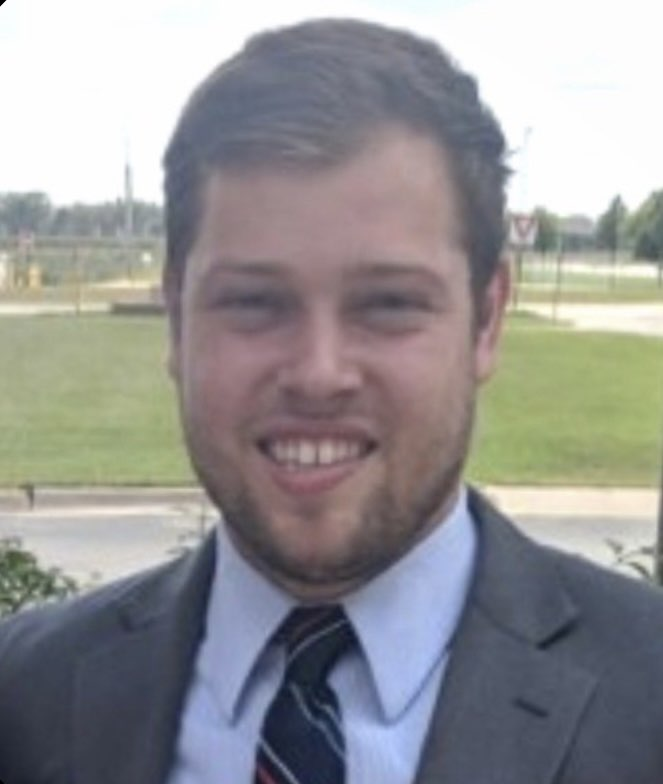
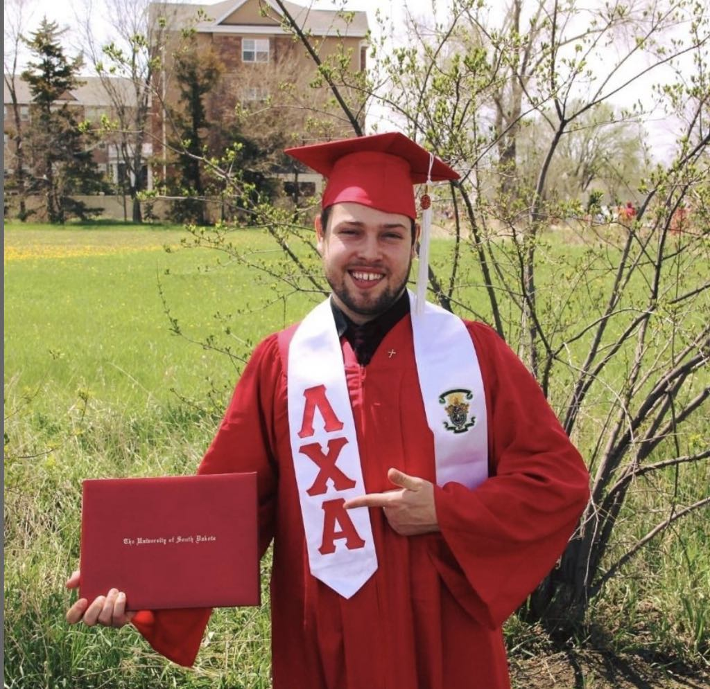

Background
Ryan was born in Colorado Springs on March 14, 1993. A proud military child, he moved to Bellevue, NE, and eventually graduated from the University of South Dakota with degrees in Psychology and Biology, and a minor in Spanish.

His professional Journey
From working as a social media consultant to managing operations in Nebraska, Ryan's career has been diverse and impactful.